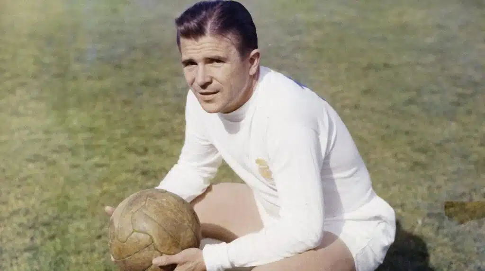
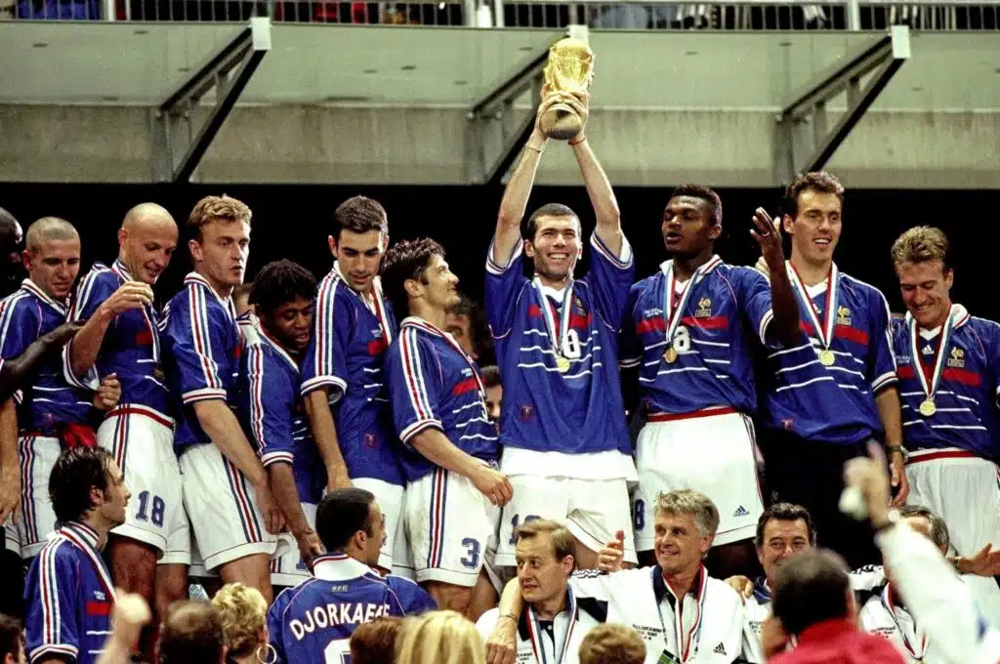
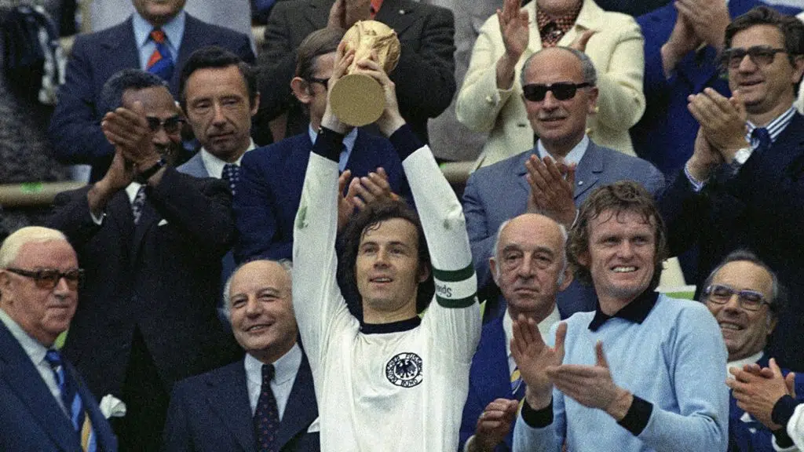
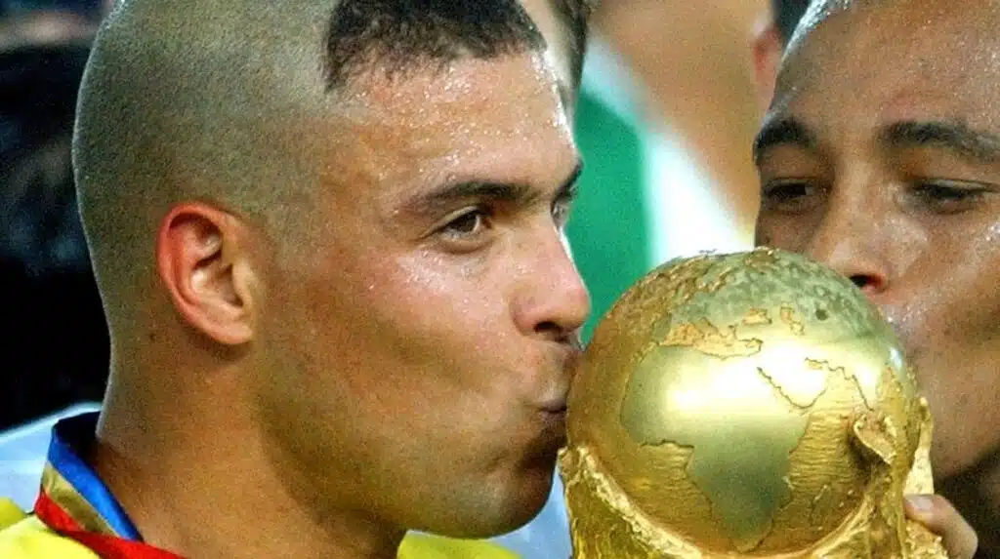
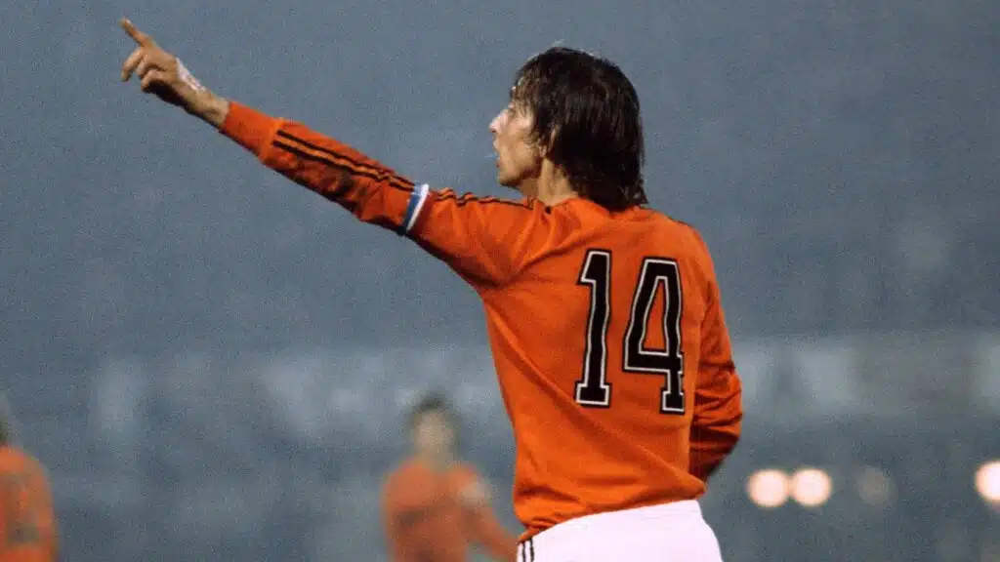
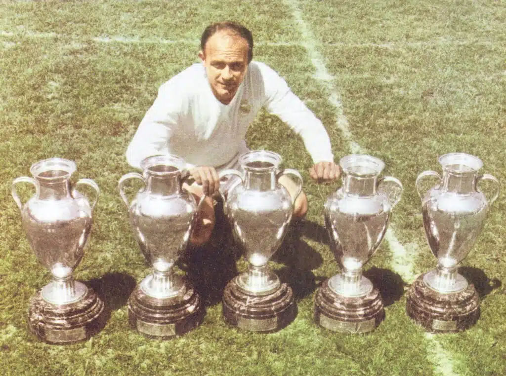
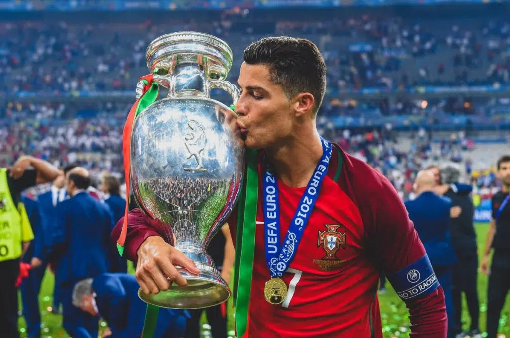
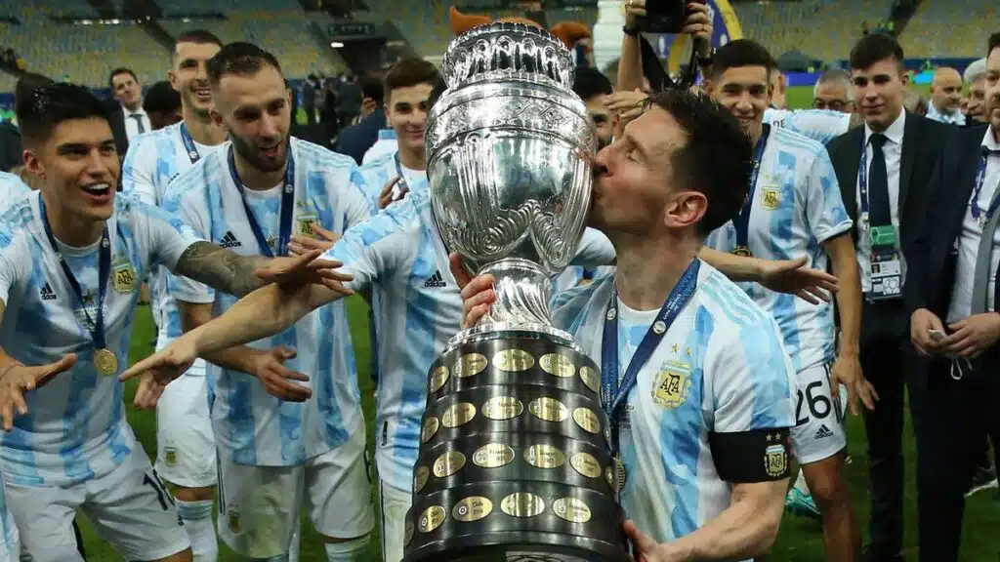
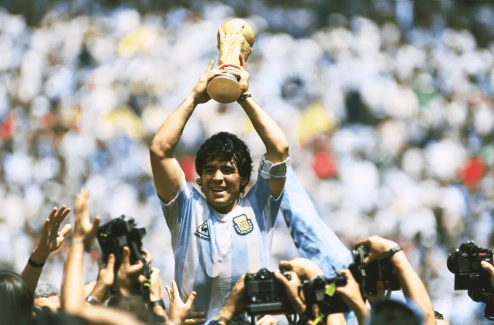
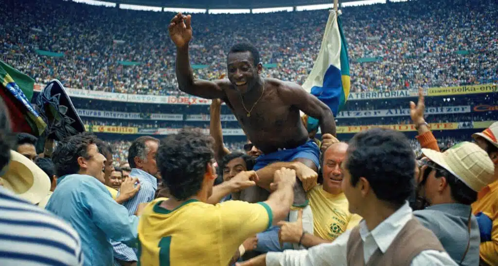

MEJORES JUGADORES DE LA HISTORIA DEL FUTBOL
El fútbol, al igual que en muchos aspectos de la vida, va de gustos. Por ello, a la hora de hablar de los mejores jugadores de la historia es difícil encontrar un punto intermedio que mantenga felices a todos. Al final, el fútbol es un deporte que va ligado a sentimientos, a momentos épicos y a pensamientos poco objetivos que pueden nublar el juicio a la hora de dar un veredicto imparcial al respecto de los mejores jugadores de toda la historia del deporte que tanto amamos.
Estos son los mejores 10 jugadores de todos los tiempos basandonos segun los sguientes criterios:
- Talento innato y trabajo duro
- Títulos colectivos
- Títulos individuales
- Importancia histórica
- Logros destacables
10. Ferenc Puskás (Hungría)
El encargado de abrir el TOP-10 no es otro que Ferenc Puskás. El húngaro tuvo una carrera magistral en el Real Madrid, donde logró ganar tres Copas de Europa y no falló a la hora de destacar con su selección, ya que logró llegar a la gran final del Mundial del 52’ pero desgraciadamente fue incapaz de ganar la gran cita.
Logros destacables:
- 1 Medalla Olímpica (Oro – 1951/1952)
- 3 Copa de Europa (1958/1959, 1959/1960 y 1965/1966)
- 5 Primera División Española (LaLiga)
- 1 Copa Intercontinental
- 1 Subcampeonato Copa del Mundo 1952

9. Zinedine Zidane (Francia)
Zizou, por su carrera como jugador, ya es una leyenda del fútbol. Sin embargo, si le sumamos lo logrado como entrenador, esto se magnifica aún más. En este ranking medimos lo primero, pero es posible no destacar todo lo logrado por un jugador de la talla de Zinedine Zidane.
Logros destacables:
- 1 Copa del Mundo (1998)
- 1 Eurocopa (2000)
- 1 Champions League (2001/2022 – Como jugador)
- 3 Champions League (2015/2016, 2016/2017 y 2017/2018 – Como entrenador)
- 1 Balón de Oro (1998)
- 1 Mejor Jugador FIFA

8. Franz Beckenbauer (Alemania)
A la hora de hablar de Beckenbauer, no solo encontramos al que indudablemente es el mejor jugador de la historia de Alemania, sino que también mencionar su faceta como entrenador y destacarlo enormemente por ello. ¿Levantar la Copa del Mundo como jugador y como entrenador? Un logro que solo está al alcance de leyendas de la magnitud del Káiser Beckenbauer.
Logros destacables:
- 1 – Copa del Mundo (1974 – Como jugador)
- 1 – Copa del Mundo (1990 – Como entrenador)
- 3 – Copa de Europa (1973/1974, 1974/1975 y 1975/1976 – Como jugador)
- 1 – Copa de Europa (2000/2001 – Como entrenador)
- 5 – Primera División Alemana (Como jugador)
- 9 – Primera División Alemana (Como entrenador)
- 2 – Balón de Oro (1972 y 1976)

7. Ronaldo Nazario (Brasil)
Ronaldo Nazario, mejor conocido como “El Gordo”, “El Fenómeno” o “El Ronaldo Real”, no necesita presentación. Este titán de los goles agrandó su leyenda con muchísimo trabajo duro y resiliencia, ya que logró superar momentos duros en su carrera para acabarla con un palmarés así de espectacular.
Logros destacables:
- 2 – Copa del Mundo (1994 y 2002)
- 2 – Copa América (1996/1967 y 1998/1999)
- 1 – Copa Confederaciones (1997)
- 1 – Copa Intercontinental (2002)
- 2 – Primera División Española (LaLiga)
- 1 – Europa League
- 2 – Balón de Oro
- 3 – Mejor Jugador FIFA

6. Johan Cruyff (Países Bajos)
El Flaco Cruyff es otro que no necesita ser presentado. El neerlandés dejó huella en el fútbol mundial con su talento, con sus regates y con sus ideas, que se encargaron de inmortalizarlo como uno de los más grandes de todos los tiempos.
Logros destacables:
- 3 – Copa de Europa (1970/1971, 1971/1972 y 1972/1973)
- 9 – Primera División Neerlandesa (Eredivisie)
- 1 – Copa Intercontinental (1972)
- 3 – Balón de Oro

5. Alfredo di Stéfano (Argentina / España)
Finalmente, antes de entrar con el TOP-4, debemos destacar a la magistral figura de Don Alfredo di Stéfano. La Saeta Rubia fue, hasta la irrupción de figuras como Maradona o Pelé, el mejor jugador que jamás se había visto en un terreno de juego. Sin embargo, el fútbol jamás olvidará a una leyenda de esta magnitud, a quien premiamos con la quinta posición del ranking.
Logros destacables:
- 1 – Copa América (1946/1947)
- 5 – Copa de Europa (1955/1956, 1956/1957, 1957/1958, 1958/1959 y 1959/1960)
- 8 – Primera División Española (LaLiga)
- 2 – Balón de Oro

4. Cristiano Ronaldo (Portugal)
Logros destacables:
- 1 – Eurocopa (2016)
- 1 – UEFA Nations League (2019)
- 5 – Champions League (2007/2008, 2013/2014, 2015/2016, 2016/2017 y 2017/2018)
- 3 – Primera División Inglesa (Premier League)
- 2 – Primera División Española (LaLiga)
- 2 – Primera División Italiana (Serie A)
- 5 – Balón de Oro
- 4 – Mejor Jugador UEFA
- 2 – Mejor Jugador FIFA
- 5 – Bota de Oro

3. Lionel Andrés Messi (Argentina)
Logros destacables:
- 1 – Medalla Olímpica (Oro – 2008/2029)
- 1 – Copa América (2021)
- 1 – Copa de Campeones UEFA-CONMEBOL / Finalissima (2022)
- 1 – Mundial Sub-20 (2005)
- 4 – Champions League (2005/2006, 2008/2009, 2010/2011 y 2014/2015)
- 10 – Primera División Española (LaLiga)
- 7 – Balón de Oro
- 5 – Bota de Oro
- 3 – Mejor Jugador UEFA
- 2 – Mejor Jugador FIFA

2. Diego Armando Maradona (Argentina)
Logros destacables:
- 1 – Copa del Mundo (1986)
- 2 – Primera División Italiana (1986/1987 y 1989/1990)
- 1 – Europa League (1988/1989)
- 1 – Copa de Campeones UEFA-CONMEBOL / Finalissima (1993)

1. Edson Arantes do Nascimento “Pelé” (Brasil)
Logros destacables:
- 3 – Copa del Mundo (1958, 1962 y 1970)
- 6 – Ligas Brasileñas (1961, 1962, 1963, 1964, 1965 y 1968)
- 2 – Copa Libertadores (1961/1962 y 1962/1963)
- 2 – Copa Intercontinental (1962 y 1963)
